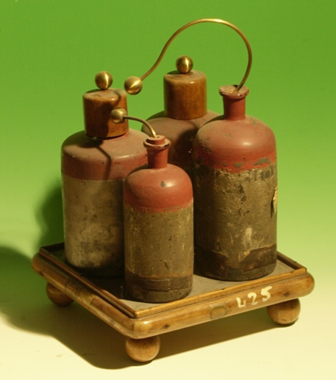

Batteria di bottiglie di Leyda
Scuola di provenienza: Liceo Classico P.Colletta, Avellino
Settore: Elettrologia
Costruttori: Sconosciuto
Materiali: Non specificato
Accessori: Sostegno di legno
Stato di conservazione: Buono
Descrizione: La bottiglia di Leida è un precursore del moderno condensatore. È formata da un dielettrico (tipicamente vetro) rivestito da due strati di tipo metallico formanti le armature. Il terminale sferico è deputato al trasferimento della carica da una macchina elettrostatica all´armatura interna del capacitore. La particolare forma a sfera ha la funzione di limitare le perdite di carica dovute all´effetto corona, responsabile della ionizzazione dell´aria circostante un corpo carico. Il collegamento del terminale esterno all´armatura interna veniva effettuato mediante una catena L´ammontare della carica che l´oggetto è in grado di immagazzinare è proporzionale all´area delle armature, allo spessore e al tipo di materiale interposto tra esse. Non di rado è possibile raggiungere scariche ad alto potenziale, anche dell´ordine dei 30.000 Volts. Il rivestimento in ceralacca che copre il terzo superiore della bottiglia ha lo scopo di evitare un cortocircuito accidentale tra le due armature, imprevisto possibile a causa della condensazione dell´umidità nell´aria. A seconda della necessità, più bottiglie di Leida potevano essere disposte in serie o in parallelo, su una base comune rivestita di materiale conduttore. La bottiglia di Leyda costituisce la forma più antica di condensatore elettrico. Si carica mettendo l´armatura esterna in comunicazione con il suolo e avvicinando l´interna alla sorgente dell´elettricità, che di solito è una macchina elettrostatica. La scarica può farsi in due modi:
- istantaneamente, riunendo le due armature con l´arco scaricatore rigido. Si tocca leggermente l´armatura esterna con una sferetta dello scaricatore e si accosta l´altra sferetta all´armatura, ottenendo così una forte scintilla;
- lentamente, isolando il condensatore, col posarlo su una lastra di vetro, e toccando alternativamente con la nocca del dito le due armature.